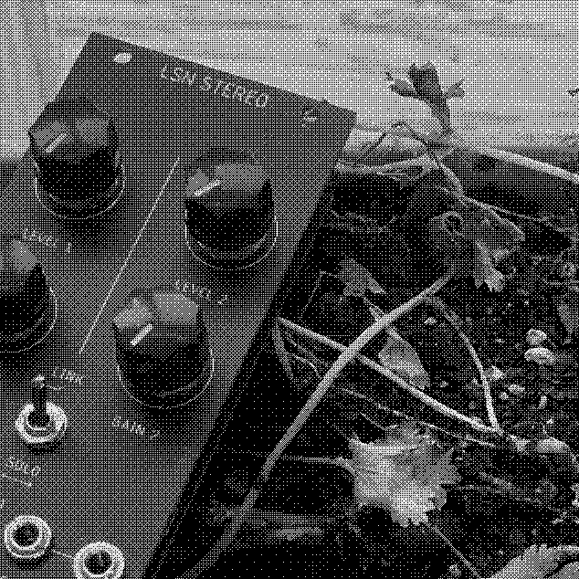
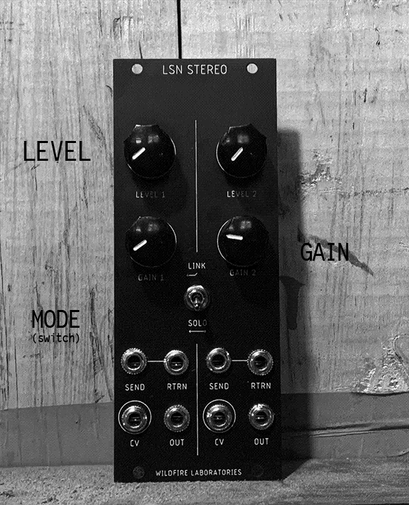

WL-283 - "LSN-STEREO"
REFERENCE DOCUMENTATION

SUMMARY
LSN-Stereo is a stereo / dual mono version of our "LUCY SAYS NO" vactrol controlled feedback loop. LSN-S's functionality is identical to the original LSN, but adds a LINK / SOLO switch that allows you to control both channels controllable via one set of controls and CV inputs.
Functioning similarly to feedback loop devices found in the effects pedal world, LSN-S differentiates itself by being voltage-controlled. CV given to LSN-S controls a vactrol placed in the middle of the feedback loop, letting more or less signal through. LSN works best with delays, filters, and other modules that process and incoming signal, but as always experimentation is encouraged.
SPECIFICATIONS
- 10HP wide
- Skiff-friendly
- 40ma~ at +12v, 40ma~ at -12
- 1kOhm input / 100kOhm output impedence
- Vactrol control with CV in
CONTROLS
LSN-S's two channels are identical - control descriptions apply to both channels

-
LEVEL
Vactrol control of feedback AMOUNT.
-
GAIN
Gain control for the feedback loop preamp - different modules oscillate / freak out at different levels, this control will allow you to account for your module's specific needs. 1x - 51x op-amp amplification, with distortion at the higher levels.
-
LINK / SOLO
When the module is in LINK mode, the LEFT HAND SIDE knobs and CV input control BOTH channels - this allows for identical gain between the two channels when using stereo modules. In SOLO mode, each channel operates independantly - LEFT side knobs and CV input controls the LEFT channel, RIGHT side knobs and CV input controls the RIGHT channel.
-
SEND
Connect the INPUT of your donor module (the one you want to have feed back) to this jack, labelled SEND.
-
RETURN
Connect the OUTPUT of your donor module to this jack, labelled RTRN.
- CVCV input to control LEVEL of either / both channels (see LINK/SOLO description above). The LEVEL knob acts as an offset when CV is being input.
TIPS / TRICKS
-
types of modules that work best with LSN: filters, distortions, reverbs and delays especially! all modules will have different input impedences and circuit designs. experiment! we keep telling you to experiment please god
-
a secret: LSN's feedback loop is basically an LPG sans the "L". by patching a sound source into "RETURN", listening to the output on "SEND", and using the CV input, you can use it as a very dirty vactrol. note that due to the boost circuit the signal will always be at least slightly distorted, but this is good
-
if you're having trouble containing your donor module's feedback (it's only very quiet or VERY LOUD), use your donor module's feedback, input gain, or similar controls to set the "initial" feedback amount.
CONTACT + SUPPORT
Please do not hesitate to reach out to us with questions, comments, repair requests, returns, parables, assembly opcodes, and general support. You can reach us via:
EMAIL – wildfirelaboratories@gmail.com
INSTAGRAM – instagram.com/wildfire_laboratories
WEBSITE – wildfirelaboratories.com d
WARRANTY INFO
All Wildfire Laboratories devices have a 5-month warranty from time of
purchase. This covers manufacturing + assembly issues. Incorrect power
connections (power supplies with wrong polarity, too much power, etc), wear
and tear from normal use, and issues due to modifications are not covered by
said Warranty (although you should absolutely email us with any mods you
do).
We will repair, replace, or refund depending on the circumstances. Shipping will be paid by the buyer. Thank you very much for your support, and as always, Wildfire wishes you an easy listening.